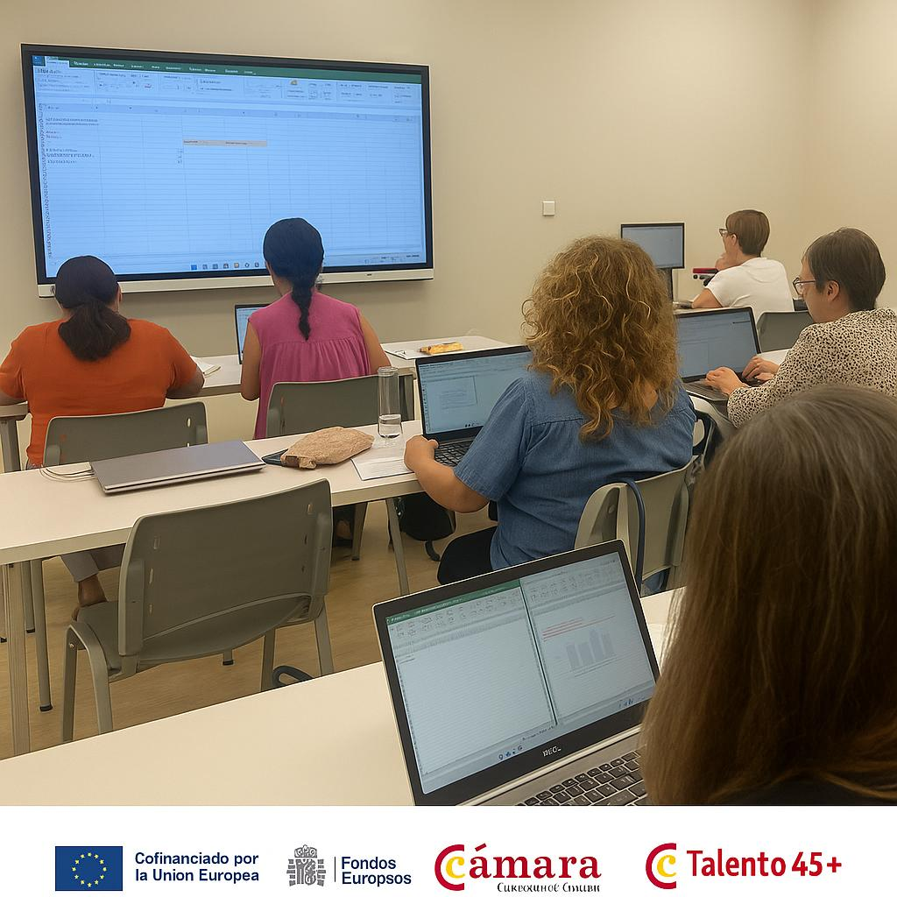
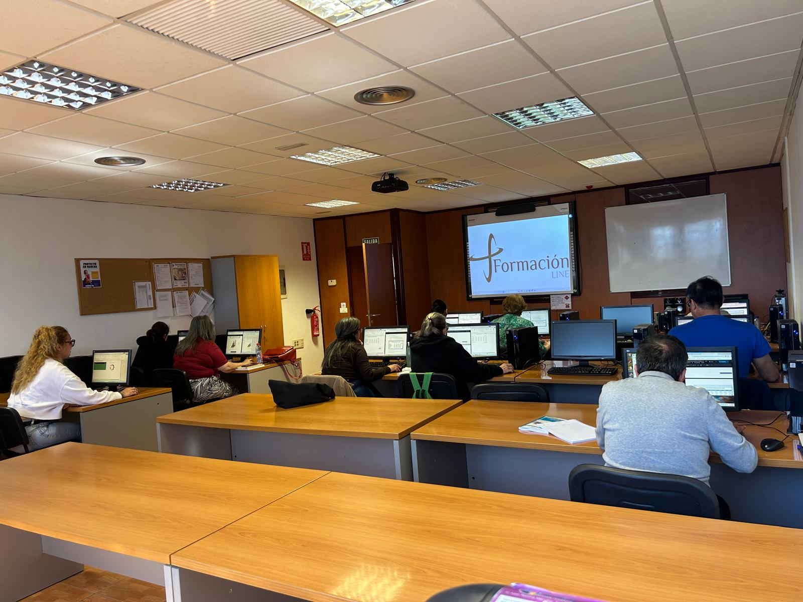
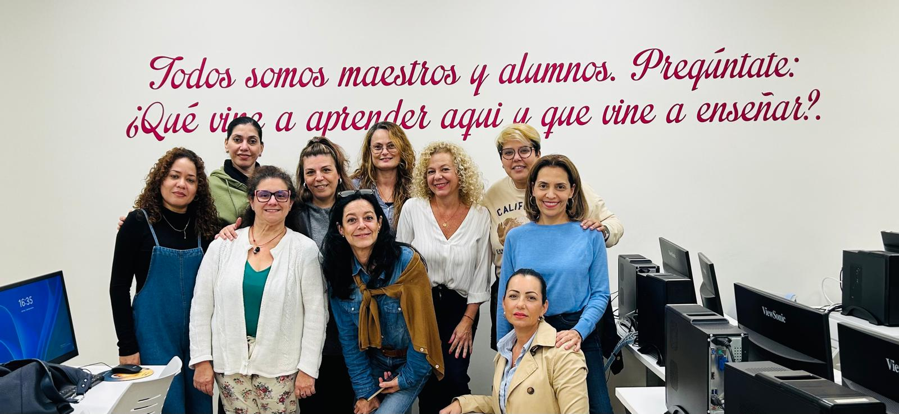

★★★★★
"Docente cercana, profesional y con una gran capacidad para explicar. Consigue que aprendas sin darte cuenta."
Idayra Cabrera
+1.700 horas de docencia · +15 años de experiencia · Formación certificada
Especializada en competencias digitales, SEO, inteligencia artificial aplicada y transformación digital para formación, empresa y proyectos educativos.
Ayudo a profesionales, pymes y entidades a mejorar su formación y su digitalización mediante docencia acreditada, desarrollo de competencias digitales, SEO, Excel avanzado, Power BI e inteligencia artificial aplicada.
Respuesta en menos de 24h
Formación práctica, aplicada y orientada a resultados medibles.
Horas de docencia
Satisfacción del alumnado
Recomiendan la formación

"Docente cercana, profesional y con una gran capacidad para explicar. Consigue que aprendas sin darte cuenta."

"Formación práctica, clara y muy bien estructurada. Se nota la experiencia y el dominio de los contenidos."

"Destaco su paciencia, cercanía y capacidad de adaptación a cada alumno. Una docente excelente."
Una trayectoria real construida junto a instituciones, centros formativos y organizaciones orientadas al empleo y la digitalización en Canarias.
Colaboraciones en programas formativos vinculados a empleo, digitalización y competencias profesionales.
Experiencia como docente en acciones formativas orientadas a mejorar la empleabilidad y las competencias digitales.
Más de 1.700 horas de formación impartida en entornos reales, colaborando con entidades públicas y privadas en Canarias.
Aprendes herramientas que puedes aplicar desde el primer día.
Desarrollas competencias digitales demandadas en el mercado.
Ganas autonomía en el uso de tecnología y datos.
Una trayectoria que combina administración de sistemas, docencia tecnológica, SEO e innovación digital aplicada a empresas, profesionales y entornos educativos.
Formación para el empleo en Ofimática, Excel Avanzado, Power BI, Competencias Digitales, SEO, Web 2.0 e Inteligencia Artificial.
Acompañamiento en procesos de digitalización, adopción de herramientas, optimización de procesos y mejora de la presencia digital.
Uso práctico de inteligencia artificial para formación, automatización, creación de recursos y mejora de procesos en empresa y educación.
Soy Idayra Cabrera, docente de formación para el empleo acreditada, administradora de sistemas y profesional orientada a la transformación digital, el SEO y la inteligencia artificial aplicada.
Con más de 1.770 horas de docencia acreditadas y experiencia en digitalización empresarial, trabajo para que la tecnología no se quede en teoría: la convierto en herramientas, procesos y aprendizaje útil para personas, empresas y proyectos.
Iniciativas concretas que combinan conocimiento técnico, visión pedagógica y aplicación real en formación y digitalización.
Herramienta para generar automáticamente la planificación de certificados de profesionalidad: módulos, calendario, festivos y distribución horaria.
Probar herramientaAcompañamiento a pymes y autónomos en procesos de mejora digital, implantación de soluciones y evolución de su actividad.
Ver proyectosAplicación de inteligencia artificial para enriquecer la docencia, generar materiales y crear recursos útiles para formación y empresa.
Descubrir másSi quieres colaborar, impulsar un proyecto, mejorar competencias digitales o aplicar tecnología con una visión práctica, aquí tienes una forma directa de continuar.